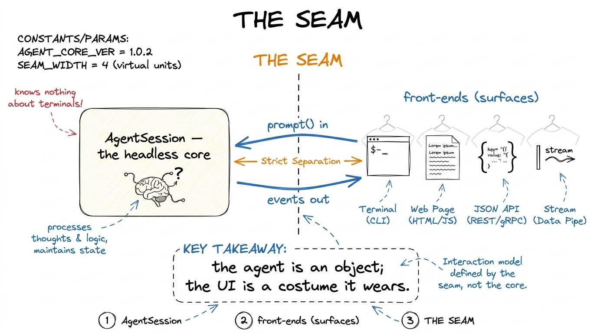
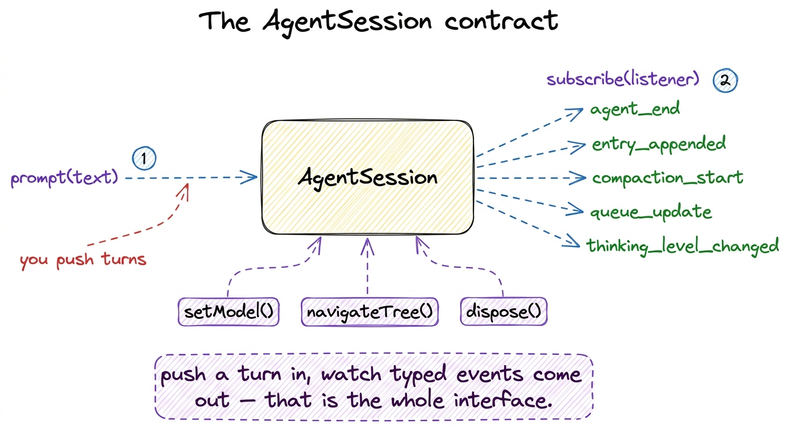
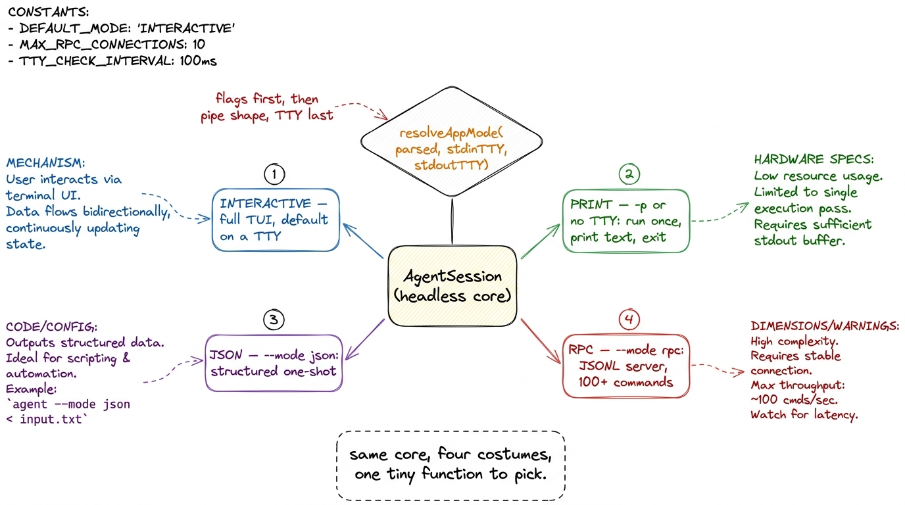
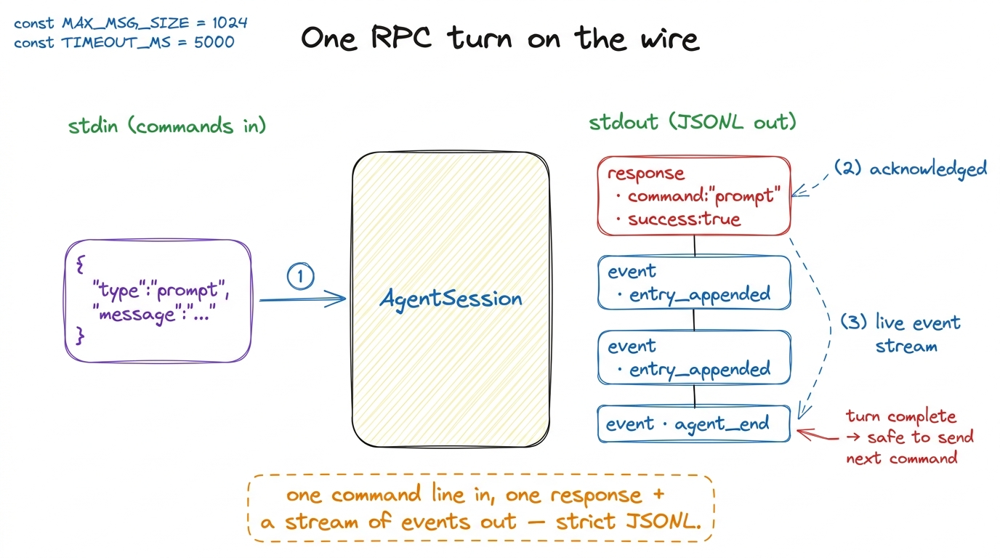

Surfaces: one headless core, four front-ends BUILD
Here is a question that sounds too simple to be worth asking, and turns out to reorganize how you see the whole system: when you type into Pi's terminal and watch the answer scroll back, what part of that is the agent? Not the box you typed into. Not the colored diff. Not the spinner. Those are pixels — a front-end. The agent is a thing behind all of it, and it has never once cared whether a human was watching. Pull it into the daylight and you find it will just as happily be driven by a shell script, a JSON reader, or another program on the far end of a pipe. The terminal was one costume. There are four.
Everything so far has been about building the agent: the loop, the toolbox, context management, subagents. This chapter is about the seam — the deliberate cut Pi makes between the agent and the way you talk to it — and why that one cut is the reason the same engine can be a terminal, a script, a server, and a library at once.
The thing the last chapters kept assuming
Look back at every mechanism we built and notice a quiet assumption riding along: someone is there. The loop streams tokens as if a human is reading them. Tool approval pauses as if a human will type "yes." None of that machinery actually needs a human — but if the agent and the terminal are the same object, the human is welded in, and you cannot run Pi in a cron job, a CI pipeline, or inside your own product without dragging a terminal along.
So the missing layer is a boundary. Pi's answer is to make the agent a plain object with no opinion about who is driving it.

figure rendering · Pi cuts one seam: a headless AgentSession core on one side, interchangThe headless core: AgentSession
The object that lives behind the seam is AgentSession, in packages/coding-agent/src/core/agent-session.ts. It is deliberately small in surface — a handful of methods — even though it drives the entire agent underneath.1 Small in interface, large in body: the class file is long, but almost all of that is internal handling of agent events, compaction, and session trees. What a caller touches is the tiny public API below. That asymmetry is the whole point of a good seam. Here is the shape of it, straight from the source:
export class AgentSession {
// send a turn; resolves when the turn is fully processed
async prompt(text: string, options?: PromptOptions): Promise<void>
// watch everything the agent does; returns an unsubscribe fn
subscribe(listener: AgentSessionEventListener): () => void
async setModel(model: Model<any>): Promise<void>
async navigateTree(/* … move within the session's branch tree */)
dispose(): void
}That is almost the entire contract. You push a turn in with prompt(), and you subscribe to a stream of events coming back out. Nothing in that pair says "render to a terminal." The events are typed and structural — the AgentSessionEvent union includes things like agent_end (with the final messages), queue_update, compaction_start, entry_appended, thinking_level_changed. A front-end is just something that calls prompt() and does something useful with those events.
Sit with how freeing that is. The core does not console.log and does not read the keyboard. It emits entry_appended and moves on. Whether that becomes a syntax-highlighted panel, a line of JSON, or nothing at all is entirely the caller's business.

figure rendering · The core's public surface: prompt() to push a turn, subscribe() to recFour surfaces, chosen by one function
Now for the costumes. When you run the pi binary, main.ts has to decide which front-end to wear before it does anything else. That decision lives in one small function, resolveAppMode in packages/coding-agent/src/main.ts, and it is worth reading in full because it is refreshingly blunt:
function resolveAppMode(parsed, stdinIsTTY, stdoutIsTTY): AppMode {
if (parsed.mode === "rpc") return "rpc";
if (parsed.mode === "json") return "json";
if (parsed.print || !stdinIsTTY || !stdoutIsTTY) return "print";
return "interactive";
}Four outcomes, in priority order. Explicit flags win first; then the shape of your pipes decides; and only if you are clearly a human at a real terminal do you get the full interface. Let me take them in the order the function considers them, because each one exists for a reason the one above it couldn't cover.
Interactive (the default on a TTY). This is the InteractiveMode you know — the full terminal UI with streaming output, live tool diffs, slash commands, Ctrl+P model cycling. It is what you get when both stdin and stdout are a TTY and you passed no mode flag. It is the richest surface and, notably, it is the last thing resolveAppMode falls back to, not the first thing it assumes.
Print (--print / -p, or no TTY). The moment you pipe Pi's input or output somewhere — echo "..." | pi, or pi -p "fix the lint" > out.txt — stdinIsTTY or stdoutIsTTY goes false and Pi drops to print mode: run the prompt once, emit the final text, exit.2 This TTY-sniffing is why Pi "just works" in a script without you asking for it. The Unix convention that a program should behave differently when its output is a pipe rather than a screen is decades old; Pi honours it by reading process.stdout.isTTY. There is even a second path in main.ts where piped-in stdin content flips an interactive launch into print mode after the fact. No spinner, no color, no waiting for a human. This is the surface a shell script or a Makefile talks to.
JSON (--mode json). Same run-once, fire-and-forget shape as print, but the output is structured rather than prose. toPrintOutputMode maps this mode to a "json" output rather than "text". You reach for this when a program needs to read Pi's result reliably rather than scrape human-readable text.
RPC (--mode rpc). The most powerful surface, and the one that most clearly proves the agent is not a UI: a strict JSONL protocol over stdin/stdout. One JSON command per line in; a stream of JSON responses and events per line out. This is a long-lived, two-way conversation with the object, not a one-shot. It is how another process — an editor plugin, a web backend, a test harness — drives Pi as a service.

figure rendering · One AgentSession, four front-ends fanned out by resolveAppMode: interaWatch it happen: the RPC exchange
The RPC surface is where the seam becomes something you can see on the wire, so let's put it under glass. Its command vocabulary is large — dozens of command types, defined as a tagged union in packages/coding-agent/src/modes/rpc/rpc-types.ts. A taste of the RpcCommand type:
export type RpcCommand =
| { id?: string; type: "prompt"; message: string; /* … */ }
| { id?: string; type: "steer"; message: string }
| { id?: string; type: "follow_up"; message: string }
| { id?: string; type: "abort" }
| { id?: string; type: "get_state" }
| { id?: string; type: "get_messages" }
| { id?: string; type: "get_tree" }
| { id?: string; type: "set_model"; provider: string; modelId: string }
| { id?: string; type: "compact"; customInstructions?: string }
| { id?: string; type: "new_session"; parentSession?: string }
| { id?: string; type: "switch_session"; sessionPath: string }
| { id?: string; type: "fork"; entryId: string }
| { id?: string; type: "clone" }
// … dozens of commands in totalEvery capability we built into the agent over the last chapters shows up here as a command you can send from another program: steer mid-turn, abort a runaway, compact the context, fork the session tree at an entry, clone it, ask for get_state or get_messages or get_tree. The TUI's buttons and the RPC's commands are the same actions on the same core — one triggered by a keystroke, the other by a line of JSON.3 This is the tell that the seam is real and not cosmetic: the interactive UI and the RPC protocol are peers, both thin drivers over AgentSession. Neither is privileged. If a capability existed only in the TUI, it would mean logic had leaked out of the core and into a costume — a design smell Pi avoids.
Here is the smallest useful conversation. You send one line, you read many:
→ {"type":"prompt","message":"read README.md and summarize it"}
← {"type":"response","command":"prompt","success":true}
← {"type":"entry_appended", ...} // assistant asks to read
← {"type":"entry_appended", ...} // tool result comes back
← {"type":"agent_end", ...} // final turn, doneThe command was acknowledged with a response (Pi's RpcResponse type — a success record keyed to the command), and then the same event stream the TUI subscribes to came out as JSONL. The two are different things: the response says "I received and accepted your command," while the event lines are the live narration of the agent working. A program on the far end reads those lines, updates its own UI, and — when it sees agent_end — knows the turn is complete and can send the next prompt. That is a full editor integration in miniature.

figure rendering · An RPC turn: a single prompt command goes in on stdin, an acknowledginThe library door: the SDK
The four surfaces all ship inside the pi binary. But the seam has one more consequence: if the agent is just an object, you can import it. Pi exposes two doors for embedding the core in your own program, in packages/coding-agent/src/core/sdk.ts and agent-session-runtime.ts.
createAgentSession() is the batteries-included door. Call it with no arguments and it auto-discovers your extensions, skills, and prompts, restores a prior session if one exists, picks a model, and hands you back a live session:
const { session } = await createAgentSession();
session.subscribe((event) => { /* your UI */ });
await session.prompt("explain this repo");The same createAgentSession() is also the full-control door: pass it explicit options and nothing is auto-discovered, so nothing surprises you. You inject your own ResourceLoader, your own Model, an explicit tool allowlist:
const { session } = await createAgentSession({
model: myModel,
tools: ["read", "bash"], // explicit allowlist
resourceLoader: loader, // your own resource loading
sessionManager: SessionManager.inMemory(),
});Same AgentSession, same prompt()/subscribe() contract — now living inside your app instead of behind a CLI. The fifth "surface," if you like, is no surface at all: Pi as a library.
Why this is the whole lesson
Step back and name what happened. We did not add a feature to the agent in this chapter. We added nothing to it. All four surfaces and both SDK doors drive the identical AgentSession you already built — the same loop, the same tools, the same context engine. What made them possible was a single decision made once: do not weld the agent to the way you watch it. Push turns in with prompt(), pull typed events out with subscribe(), and let a tiny resolveAppMode pick the costume.
That is why the same engine is a terminal for you, a one-shot for a script, a structured result for a program, a JSONL service for an editor, and a library inside a product — all without the core knowing which. A harness is not a UI. The moment you internalize that, you stop building agents trapped in the terminal you first wrote them in.
With the surfaces mapped, one door remains ajar: those auto-discovered extensions that createAgentSession() loads. What are they, and how far can they reshape the agent from the outside? That is Pi's extensibility — the last layer, and the one that makes everything before it configurable.